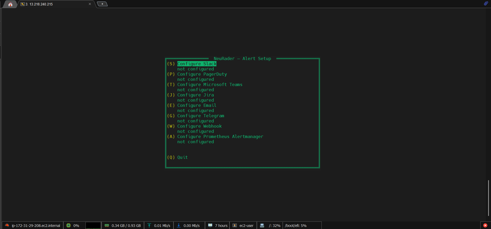
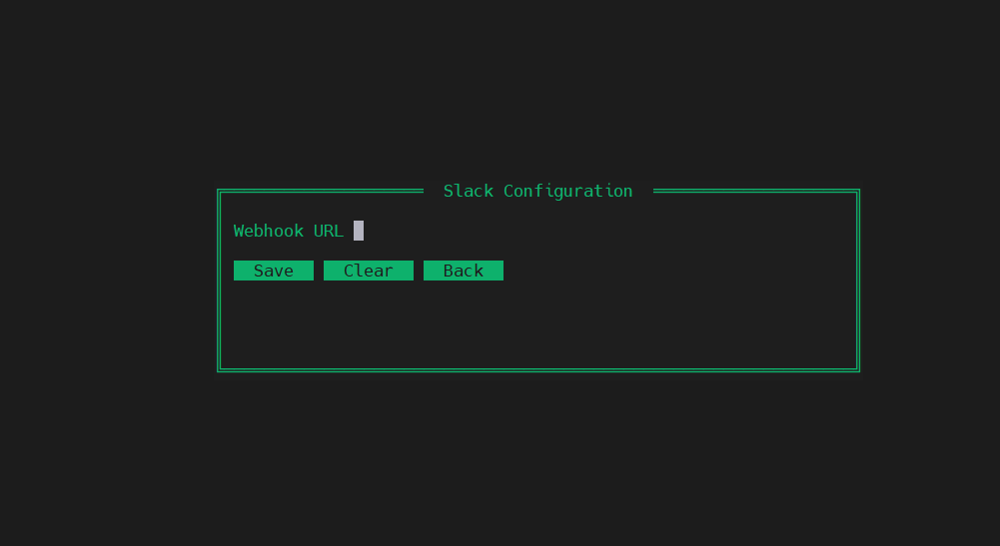
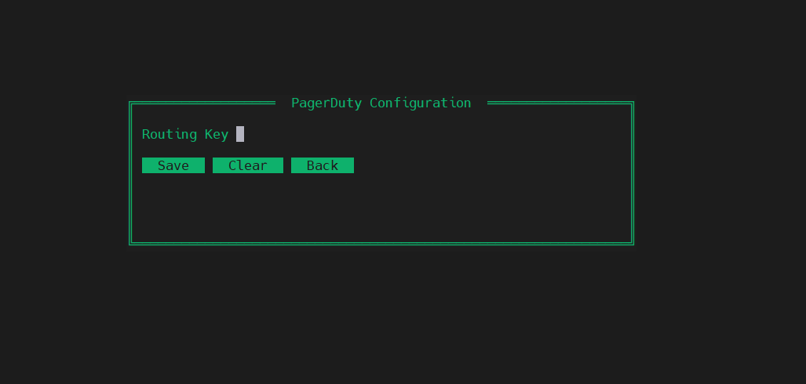
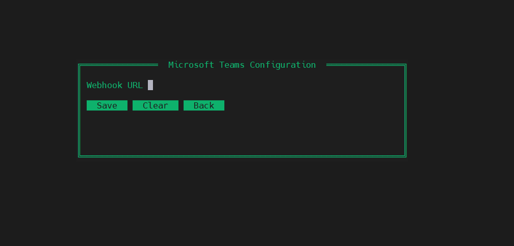
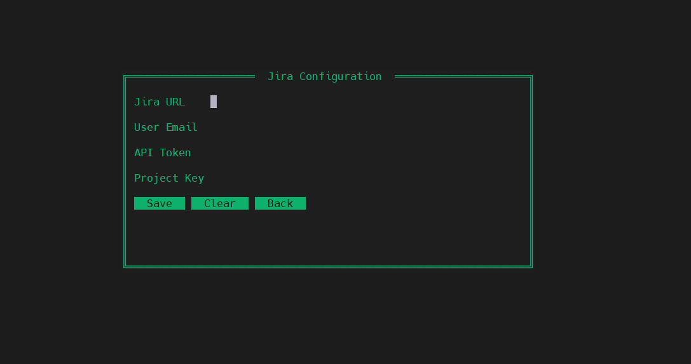
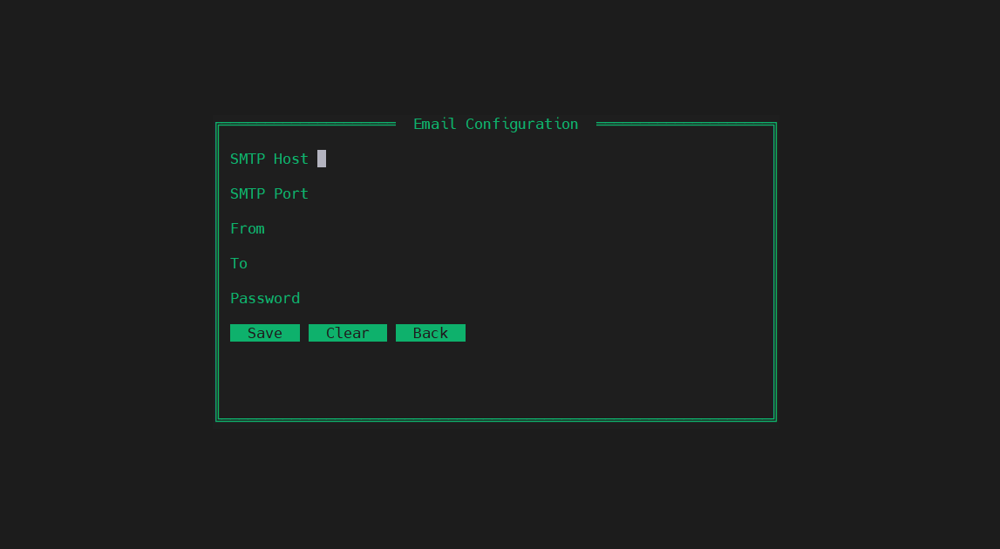
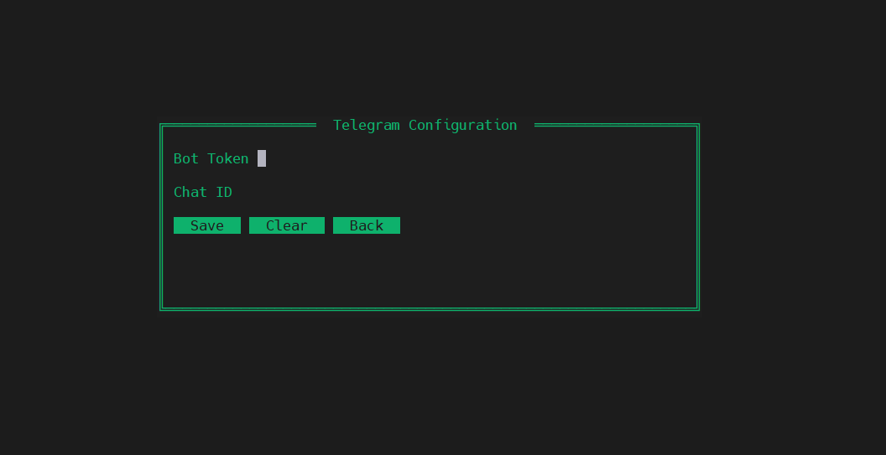
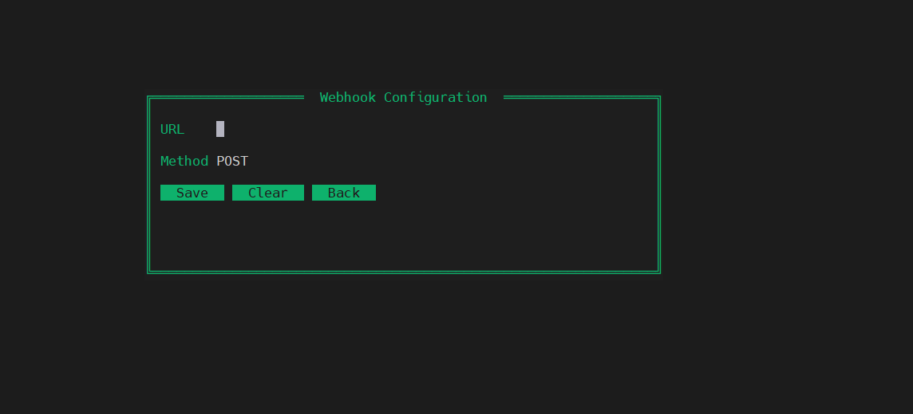
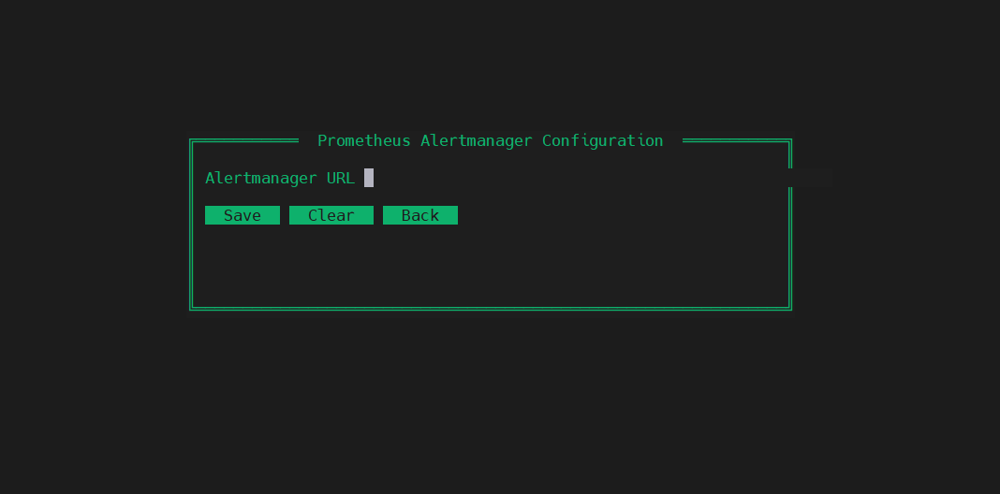

NeuRader assesses every playbook run automatically. The moment a failure is detected, all configured channels fire simultaneously — Slack, PagerDuty, Jira, Teams, Email, Telegram, Webhook, and Alertmanager.
NeuRader routes alerts differently based on outcome. Success is quiet. Failure is loud. Every run is an independent assessment — no state tracking, no consecutive failure counters.
ansible-playbook finishes. Callback writes JSON log to disk.
Reads the run log. Counts failed and unreachable hosts.
Checks status field for each host in the run.
Slack / Teams / Telegram get a green success message. Nothing else fires.
All 8 channels fire simultaneously with full host + task detail.
NeuRader fires alerts and moves on. No polling, no waiting, no retry loops. Each run is independent.
10 hosts failed = 1 ticket. All hosts consolidated. Engineer owns resolution — NeuRader never monitors or auto-closes.
PagerDuty uses run ID as dedup key. One incident per run, no duplicates even if post-run fires multiple times.
Task args with keys matching password, secret, token, key are scrubbed before being sent to any alert channel.
Configure any combination of channels. On failure, all configured channels fire at the same time — no priority queue, no sequential firing.
Run sudo neurader alert-setup to open an nmtui-style interactive terminal UI. Navigate with arrow keys, Tab between fields, Enter to select. Everything saves directly to /etc/neurader/neurader.conf.
Run the setup command. The green TUI opens instantly in your terminal — no browser, no web UI needed.
Use arrow keys to navigate the main menu. Each channel shows "not configured" or "✓ configured" status at a glance. Press Enter or the shortcut key to open a channel's form.
Tab between fields. Password and token fields are masked. Press Save to write to config. Press Clear to remove a channel's config entirely.
Run alert-test after configuring. It sends a simulated failure alert with a fake host to every configured channel. Verify everything works before a real incident.









Takes under 2 minutes. Run alert-setup, fill in one channel, run alert-test to verify, done.